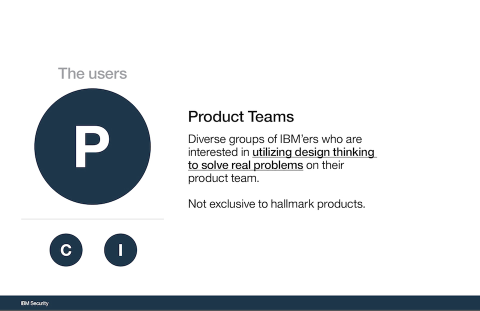

IBM Security Design Practices Program
My Role: Design Practice Lead
Time Frame: July 2016 - January 2017
Intro
In July of 2016 I joined IBM Security to be their portfolio level researcher. Two weeks in, I pivoted my plans and took the role to vision and build a design practices program. In six months, I helped many product teams become user centered by using design thinking workshops as a tool. The program has been a contributor to over seven million dollars in sales and helped save millions in development costs.
Below are the visuals presented to my executives during my year end review of what I was able to accomplish in a short time.

Strategy
As a one-man army, I had to apply my entrepreneurial mindset to expand design thinking at a rapid pace.
Process - Scoping
Sticking to my roots in research I began to scope and address the two "as-is" scenarios that existed for my business unit.
Process - Users
I needed to understand who my users were and what was important to them.

Process - Visioning
I wanted to create a opportunity statement which would establish a to-be vision around our original goal.
I focused on understanding how my users needs might change given different offerings. What were their needs and how could I solve them by delivering design thinking workshops?
The half-day experience focused on delivering a high level overview of what design thinking is and how it can be used.
The one day is rather versitile because it allows us to deliver an experience to all three of our users. We have been able to run one-day workshops which are educational but also drive impact to a real problem.
The three day workshop is our sweet spot. In three days we are able to take teams from zero to fully scoped product. By focusing on what the user's needs and pain points are we are able to create phenomenal solutions. Every product team that I have worked with has attributed months upons months of saved development time due to the alignment created through design thinking.
The five day experience is a unique. It allows for brand new product teams to get off the ground and practice design thinking from the get-go. For the teams we show them how to prototype fast and the value of conducting user testing. This is the total immersion into the world of design.
For the program, I wanted to establish clear and measurable goals. This allows me to be accountable for the success or failures that laid ahead.
Outcomes
Given the goals above we were able to meet and exceed the original ask of the program.
The team mentioned below was the first project team workshop I ever ran. That team went on to ship a v1 release in 1 month and close almost $7,000,000 in sales. They attribute a bulk of their success for the vision of the project to my workshop.
Below are testimonials from veteran IBM'ers who have been able to grasp and apply design thinking into their work. That impact is extremely rewarding